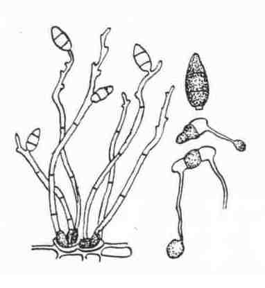

稻 瘟 病
病害别名：稻热病、火烧瘟、吊头瘟、掐颈瘟
为害部位：各部分
病害性质：重要病害
病原：稻梨孢菌(Pyricularia oryzae Cav.)稻瘟病病原菌分生孢子梗和分生孢子
病害表现：为害水稻各部分，在整个生长期都有发生. 1．秧苗 发病后变成黄褐色而枯死。2．叶片斑点 主要有两种：一是急性型病斑，呈暗绿色，多近圆形或椭圆形；二是慢性型病斑，多为梭形，外围有黄色晕圈，内部为褐色，中心灰白色，有褐色坏死线向两头延伸。3．茎节病斑 呈黑褐色或黑色斑点，病斑在节上成环状蔓延，最后整个节变黑色坏死。4．穗茎病斑 常在穗茎上发生淡褐色或墨绿色的病变，影响结实，形成白穗。5．谷粒病斑 边缘暗褐色，中部灰白色。
 稻瘟病病叶
稻瘟病病叶
 稻瘟病急性型病斑(左)和慢性型病斑(右)
稻瘟病急性型病斑(左)和慢性型病斑(右)
 稻瘟病茎叶发病
稻瘟病茎叶发病
 稻瘟病叶鞘和穗颈发病
稻瘟病叶鞘和穗颈发病
发病规律：纹枯病主要以菌核在土壤里越冬。第二年飘浮水面的菌核萌发抽出菌丝，浸人叶鞘形成病斑，从病斑上再长出菌丝向附近蔓延形成新病斑。菌核落人水中又可借水流传播。温度在25－31℃和饱和湿度为病害流行的最有利条件。过量施氮肥，高度密植，灌水过深过多或偏迟，均为诱发病害的主要因素。一般水稻从分蘖期开始发病，孕穗期前后达发病高峰，乳熟期后病情下降。
病害防治:1．加强栽培管理 一是合理密植，实行东西向宽窄行条栽，以利通风透光，降低田间湿度；二是浅水勤灌，适时晒田；三是合理施肥，避兔偏施或迟施氮肥，增施磷钾肥。2．药剂防治 一是每666.7平方米用5％并同霉素水剂150毫升或20％粉剂50克，对水50千克喷雾，重病田需打药2次，间隔期为7－10天；二是穗期可用15％粉锈宁可湿性粉剂50克或50％多菌灵可湿性粉剂50克对水50千克喷雾.